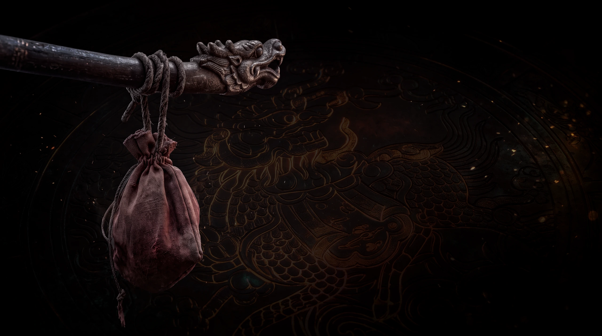

ĐẠO CỤ HỘ THÂN · TRƯỢNG ĐẦU RỒNG
Túi Pháp Khí
Càn Khôn Bố Đai & Trượng Gỗ Mun Chạm Long Thủ
Túi vải thô nhuộm chu sa trầm mặc buộc chặt bằng dây gai trên đầu trượng gỗ mun chạm rồng. Bên trong cất giữ kim bạc thử độc, phù giấy dó Hoàng Kim và tro hương Điện Voi Ré — hành trang sinh tử của người bước vào vùng Khí suy.
- CHỦ SỞ HỮU
- Khâm Thiên Sứ
- CÔNG NĂNG
- Hộ mệnh · Trừ tà độc
- NGŨ HÀNH
- Thổ · Mộc